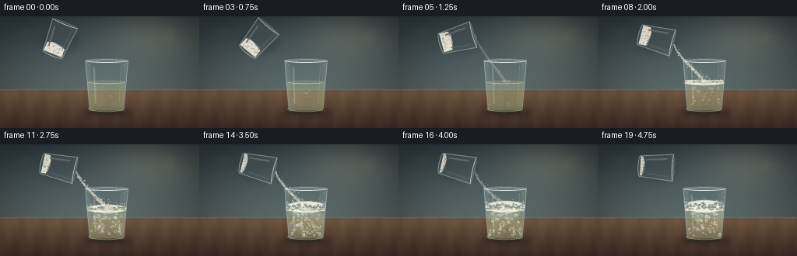
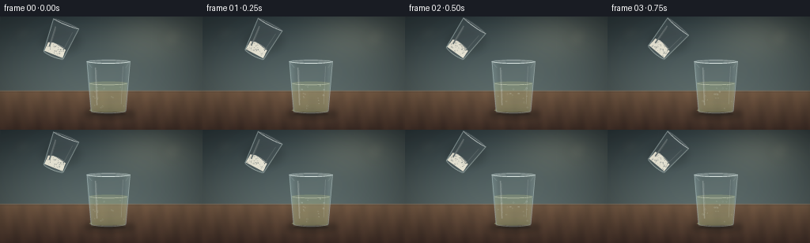
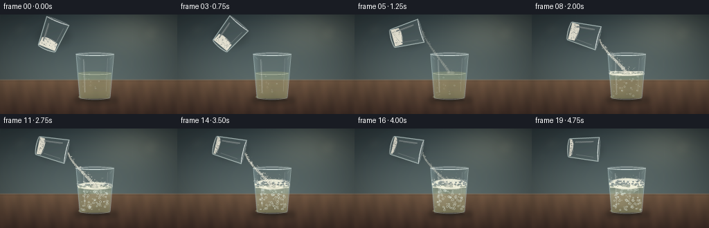
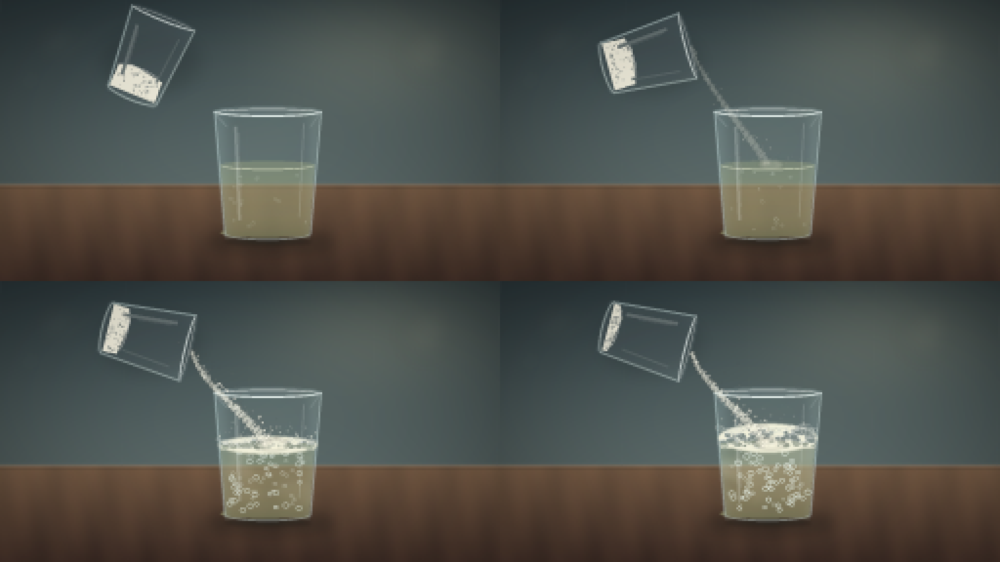
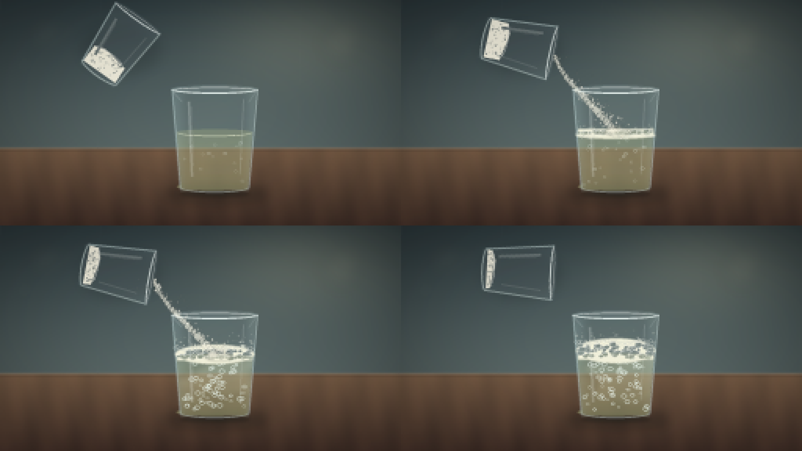

CODING AGENTS AS PIXEL WORLD MODELS
traex/DeepSeek-V4.1-Flash · material_0024
点击播放 · 原生 RGB 像素
逐轮保存的候选
回放视频、检查图与代码变化。
每份候选均可单独播放。实际图片检查记录在下方工具轨迹中。
候选 01播放与检查图
点击播放 · 原生 RGB 像素

展开代码变化
--- 上一保存版本
+++ 本次保存版本
@@ -0,0 +1,617 @@
+"""Procedurally render a short baking-soda-and-vinegar reaction video."""
+
+from __future__ import annotations
+
+import math
+from pathlib import Path
+
+import cv2
+import numpy as np
+from PIL import Image, ImageDraw, ImageFilter
+
+import artifact_io
+
+
+W, H = 256, 144
+SS = 4
+RW, RH = W * SS, H * SS
+FRAMES = 20
+FPS = 4.0
+CASE_DIR = Path(__file__).resolve().parent
+
+
+def rgba_layer() -> tuple[Image.Image, ImageDraw.ImageDraw]:
+ layer = Image.new("RGBA", (RW, RH), (0, 0, 0, 0))
+ return layer, ImageDraw.Draw(layer)
+
+
+def smoothstep(a: float, b: float, x: float) -> float:
+ if a == b:
+ return float(x >= b)
+ u = float(np.clip((x - a) / (b - a), 0.0, 1.0))
+ return u * u * (3.0 - 2.0 * u)
+
+
+def bezier(p0, p1, p2, p3, count=96):
+ u = np.linspace(0.0, 1.0, count)[:, None]
+ p0, p1, p2, p3 = map(np.asarray, (p0, p1, p2, p3))
+ return (
+ (1 - u) ** 3 * p0
+ + 3 * (1 - u) ** 2 * u * p1
+ + 3 * (1 - u) * u**2 * p2
+ + u**3 * p3
+ )
+
+
+def soft_ellipse(
+ canvas: Image.Image,
+ box: tuple[float, float, float, float],
+ fill: tuple[int, ...],
+ blur: float = 0.0,
+):
+ layer, draw = rgba_layer()
+ draw.ellipse(tuple(round(v) for v in box), fill=fill)
+ if blur:
+ layer = layer.filter(ImageFilter.GaussianBlur(blur))
+ canvas.alpha_composite(layer)
+
+
+def make_background(rng: np.random.Generator) -> Image.Image:
+ y = np.linspace(0.0, 1.0, RH, dtype=np.float32)[:, None]
+ x = np.linspace(0.0, 1.0, RW, dtype=np.float32)[None, :]
+
+ # A quiet, cool kitchen wall and warm stone counter keep the clear glasses legible.
+ wall_top = np.array([52, 68, 73], dtype=np.float32)
+ wall_bottom = np.array([112, 127, 124], dtype=np.float32)
+ wall = wall_top * (1 - y) + wall_bottom * y
+ img = np.repeat(wall[:, None, :], RW, axis=1)
+
+ glow = np.exp(-(((x - 0.77) / 0.36) ** 2 + ((y - 0.16) / 0.34) ** 2) * 2.0)
+ img += glow[..., None] * np.array([35, 31, 22], dtype=np.float32)
+ vignette = np.clip(1.0 - 0.32 * (((x - 0.5) / 0.68) ** 2 + ((y - 0.47) / 0.74) ** 2), 0.68, 1.0)
+ img *= vignette[..., None]
+
+ horizon = 378
+ counter_y = np.clip((np.arange(RH, dtype=np.float32) - horizon) / (RH - horizon), 0, 1)[:, None]
+ counter_top = np.array([112, 87, 66], dtype=np.float32)
+ counter_bottom = np.array([62, 45, 38], dtype=np.float32)
+ counter = counter_top * (1 - counter_y) + counter_bottom * counter_y
+ counter = np.repeat(counter[:, None, :], RW, axis=1)
+ grain = (
+ 5.5 * np.sin(x * 56 + y * 7)
+ + 2.2 * np.sin(x * 119 - y * 12)
+ + rng.normal(0, 1.4, (RH, RW))
+ )
+ counter += grain[..., None] * np.array([0.7, 0.48, 0.32], dtype=np.float32)
+ img[horizon:] = counter[horizon:]
+
+ base = Image.fromarray(np.uint8(np.clip(img, 0, 255)), "RGB").convert("RGBA")
+
+ # Defocused highlights suggest a domestic kitchen without competing with the glasses.
+ bokeh, bd = rgba_layer()
+ for cx, cy, radius, color in [
+ (115, 88, 38, (216, 204, 166, 14)),
+ (181, 74, 22, (225, 218, 183, 10)),
+ (870, 112, 48, (237, 220, 169, 13)),
+ (905, 64, 19, (255, 238, 188, 11)),
+ (61, 167, 29, (191, 218, 211, 10)),
+ ]:
+ bd.ellipse((cx - radius, cy - radius, cx + radius, cy + radius), fill=color)
+ bokeh = bokeh.filter(ImageFilter.GaussianBlur(24))
+ base.alpha_composite(bokeh)
+
+ # Counter edge and a few restrained tile seams.
+ edge, ed = rgba_layer()
+ ed.rectangle((0, horizon - 4, RW, horizon + 4), fill=(222, 207, 181, 28))
+ ed.line((0, horizon + 5, RW, horizon + 5), fill=(36, 35, 34, 85), width=3)
+ for sx in (0, 256, 512, 768, 1024):
+ ed.line((sx, 0, sx - 8, horizon), fill=(204, 220, 218, 12), width=2)
+ edge = edge.filter(ImageFilter.GaussianBlur(1.2))
+ base.alpha_composite(edge)
+ return base
+
+
+def glass_body_mask(cx: float, top: float, bottom: float, wtop: float, wbot: float) -> Image.Image:
+ mask = Image.new("L", (RW, RH), 0)
+ d = ImageDraw.Draw(mask)
+ rim_h = max(14, wtop * 0.105)
+ bottom_h = max(16, wbot * 0.12)
+ body = [
+ (cx - wtop / 2, top + rim_h / 2),
+ (cx - wbot / 2, bottom - bottom_h / 2),
+ (cx - wbot / 2 + 4, bottom),
+ (cx + wbot / 2 - 4, bottom),
+ (cx + wbot / 2, bottom - bottom_h / 2),
+ (cx + wtop / 2, top + rim_h / 2),
+ ]
+ d.polygon(body, fill=255)
+ d.ellipse((cx - wbot / 2, bottom - bottom_h, cx + wbot / 2, bottom), fill=255)
+ d.ellipse((cx - wtop / 2, top, cx + wtop / 2, top + rim_h), fill=255)
+ return mask
+
+
+def liquid_mask(
+ cx: float,
+ top: float,
+ bottom: float,
+ wtop: float,
+ wbot: float,
+ liquid_y: float,
+) -> Image.Image:
+ mask = Image.new("L", (RW, RH), 0)
+ d = ImageDraw.Draw(mask)
+ fraction = np.clip((liquid_y - top) / (bottom - top), 0, 1)
+ width = wtop + (wbot - wtop) * fraction
+ rim_h = max(14, wtop * 0.105)
+ bottom_h = max(16, wbot * 0.12)
+ d.polygon(
+ [
+ (cx - width / 2 + 5, liquid_y),
+ (cx - wbot / 2 + 5, bottom - bottom_h / 2),
+ (cx - wbot / 2 + 9, bottom - 4),
+ (cx + wbot / 2 - 9, bottom - 4),
+ (cx + wbot / 2 - 5, bottom - bottom_h / 2),
+ (cx + width / 2 - 5, liquid_y),
+ ],
+ fill=255,
+ )
+ d.ellipse(
+ (cx - width / 2 + 5, bottom - bottom_h, cx + wbot / 2 - 5, bottom - 3),
+ fill=255,
+ )
+ surface_h = max(9, width * 0.075)
+ d.ellipse(
+ (cx - width / 2 + 5, liquid_y - surface_h / 2, cx + width / 2 - 5, liquid_y + surface_h / 2),
+ fill=255,
+ )
+ del rim_h
+ return mask
+
+
+def draw_receiver_glass(
+ canvas: Image.Image,
+ rng: np.random.Generator,
+ frame_idx: int,
+ t: float,
+ liquid_y: float,
+ cloud: float,
+):
+ cx, top, bottom = 548.0, 217.0, 489.0
+ wtop, wbot = 222.0, 181.0
+
+ # Contact shadow.
+ shadow, sd = rgba_layer()
+ sd.ellipse((cx - 125, bottom - 16, cx + 132, bottom + 28), fill=(24, 25, 24, 92))
+ shadow = shadow.filter(ImageFilter.GaussianBlur(13))
+ canvas.alpha_composite(shadow)
+ soft_ellipse(canvas, (cx - 88, bottom - 1, cx + 88, bottom + 12), (24, 31, 30, 92), 4)
+
+ body = glass_body_mask(cx, top, bottom, wtop, wbot)
+
+ # Pale green-amber vinegar, shifting milky where the reaction is active.
+ lmask = liquid_mask(cx, top, bottom, wtop, wbot, liquid_y)
+ liquid, ld = rgba_layer()
+ if True:
+ arr = np.zeros((RH, RW, 4), dtype=np.uint8)
+ yy = np.arange(RH, dtype=np.float32)[:, None]
+ depth = np.clip((yy - liquid_y) / (bottom - liquid_y), 0, 1)
+ arr[..., 0] = 172 + 12 * depth
+ arr[..., 1] = 178 + 14 * depth
+ arr[..., 2] = 124 + 8 * depth
+ arr[..., 3] = 82 + 26 * depth
+ liquid = Image.fromarray(arr, "RGBA")
+ # Cloudy reaction zones, heavier at the surface.
+ cloud_layer, cd = rgba_layer()
+ for i in range(20):
+ bx = cx + rng.uniform(-82, 82)
+ by = liquid_y + rng.uniform(10, 115)
+ rr = rng.uniform(14, 43) * (0.35 + cloud)
+ alpha = int((12 + 46 * cloud) * (1.0 - (by - liquid_y) / 150))
+ cd.ellipse((bx - rr, by - rr * 0.48, bx + rr, by + rr * 0.48), fill=(244, 239, 213, max(4, alpha)))
+ cloud_layer = cloud_layer.filter(ImageFilter.GaussianBlur(10))
+ liquid.alpha_composite(cloud_layer)
+ liquid.putalpha(Image.fromarray(np.minimum(np.asarray(liquid.getchannel("A")), np.asarray(lmask)), "L"))
+ canvas.alpha_composite(liquid)
+
+ # Liquid meniscus and a bright surface line.
+ surface_layer, surface_draw = rgba_layer()
+ fraction = np.clip((liquid_y - top) / (bottom - top), 0, 1)
+ sw = wtop + (wbot - wtop) * fraction - 14
+ surface_draw.arc(
+ (cx - sw / 2, liquid_y - 8, cx + sw / 2, liquid_y + 10),
+ 5,
+ 175,
+ fill=(236, 238, 204, 155),
+ width=3,
+ )
+ canvas.alpha_composite(surface_layer)
+
+ # Bubble volume: small sparkling bubbles, denser as the foam develops.
+ bubbles, bd = rgba_layer()
+ activity = smoothstep(0.28, 0.62, t)
+ bubble_count = int(16 + 64 * activity)
+ for i in range(bubble_count):
+ phase = rng.uniform(0, 1)
+ rise = (phase + t * (0.55 + rng.uniform(0, 0.55))) % 1.0
+ by = liquid_y + 7 + rise * (bottom - liquid_y - 24)
+ half_width = 66 + 22 * (by - liquid_y) / (bottom - liquid_y)
+ bx = cx + rng.uniform(-half_width, half_width)
+ r = rng.uniform(2.2, 6.5) * (0.72 + activity * 0.4)
+ wobble = math.sin(t * 15 + i * 2.17) * 2.3
+ a = int(75 + 125 * activity)
+ bd.ellipse(
+ (bx + wobble - r, by - r * 0.82, bx + wobble + r, by + r * 0.82),
+ outline=(236, 248, 239, a),
+ width=1 if r < 4 else 2,
+ )
+ bd.arc(
+ (bx + wobble - r * 0.65, by - r * 0.7, bx + wobble + r * 0.15, by - r * 0.02),
+ 190,
+ 325,
+ fill=(255, 255, 249, min(235, a + 35)),
+ width=1,
+ )
+ canvas.alpha_composite(bubbles)
+
+ # Back rim and inner glass before the front glass wall.
+ back, bdraw = rgba_layer()
+ rim_h = 22
+ bdraw.ellipse((cx - wtop / 2, top, cx + wtop / 2, top + rim_h), fill=(197, 221, 220, 22))
+ bdraw.ellipse(
+ (cx - wtop / 2 + 8, top + 5, cx + wtop / 2 - 8, top + rim_h - 2),
+ outline=(225, 239, 236, 95),
+ width=3,
+ )
+ bdraw.arc((cx - wtop / 2, top, cx + wtop / 2, top + rim_h), 5, 175, fill=(231, 242, 240, 158), width=4)
+ canvas.alpha_composite(back)
+
+ # Glass body tint and side walls.
+ glass = Image.new("RGBA", (RW, RH), (0, 0, 0, 0))
+ ga = np.zeros((RH, RW, 4), dtype=np.uint8)
+ xx = np.arange(RW, dtype=np.float32)[None, :]
+ yy = np.arange(RH, dtype=np.float32)[:, None]
+ left = np.exp(-((xx - (cx - wtop * 0.46)) / 22) ** 2)
+ right = np.exp(-((xx - (cx + wtop * 0.44)) / 17) ** 2)
+ glass_rgb = np.array([194, 226, 228], dtype=np.float32)
+ ga[..., :3] = glass_rgb
+ ga[..., 3] = np.clip(14 + 31 * left + 25 * right + 7 * np.exp(-((yy - 315) / 140) ** 2), 0, 58)
+ glass = Image.fromarray(ga, "RGBA")
+ glass.putalpha(Image.fromarray(np.minimum(np.asarray(glass.getchannel("A")), np.asarray(body)), "L"))
+ canvas.alpha_composite(glass)
+
+ # Strong but thin edge and reflection strokes.
+ edges, ed = rgba_layer()
+ side_left = [(cx - wtop / 2 + 2, top + 10), (cx - wbot / 2 + 3, bottom - 10)]
+ side_right = [(cx + wtop / 2 - 2, top + 10), (cx + wbot / 2 - 3, bottom - 10)]
+ ed.line(side_left, fill=(210, 234, 233, 110), width=4)
+ ed.line(side_right, fill=(216, 236, 233, 105), width=4)
+ ed.arc((cx - wbot / 2, bottom - 26, cx + wbot / 2, bottom + 3), 8, 172, fill=(218, 235, 230, 120), width=4)
+ ed.line((cx - 66, top + 42, cx - 58, bottom - 38), fill=(244, 252, 248, 57), width=7)
+ ed.line((cx - 60, top + 55, cx - 54, bottom - 66), fill=(255, 255, 255, 45), width=2)
+ ed.line((cx + 73, top + 36, cx + 64, bottom - 44), fill=(235, 248, 242, 42), width=4)
+ ed.arc((cx - wtop / 2 + 10, top + 5, cx + wtop / 2 - 10, top + rim_h - 1), 186, 354, fill=(247, 255, 250, 115), width=2)
+ edges = edges.filter(ImageFilter.GaussianBlur(0.55))
+ canvas.alpha_composite(edges)
+ return (cx, top, wtop, liquid_y)
+
+
+def source_glass_layer(rng: np.random.Generator, powder_fraction: float) -> tuple[Image.Image, tuple[float, float]]:
+ size = 300
+ local = Image.new("RGBA", (size, size), (0, 0, 0, 0))
+ d = ImageDraw.Draw(local)
+ cx, top, bottom = 150, 55, 244
+ wtop, wbot = 142, 112
+ rim_h, bottom_h = 16, 17
+
+ body = [
+ (cx - wtop / 2, top + rim_h / 2),
+ (cx - wbot / 2, bottom - bottom_h / 2),
+ (cx - wbot / 2 + 5, bottom),
+ (cx + wbot / 2 - 5, bottom),
+ (cx + wbot / 2, bottom - bottom_h / 2),
+ (cx + wtop / 2, top + rim_h / 2),
+ ]
+ mask = Image.new("L", (size, size), 0)
+ md = ImageDraw.Draw(mask)
+ md.polygon(body, fill=255)
+ md.ellipse((cx - wbot / 2, bottom - bottom_h, cx + wbot / 2, bottom), fill=255)
+ md.ellipse((cx - wtop / 2, top, cx + wtop / 2, top + rim_h), fill=255)
+
+ tint = Image.new("RGBA", (size, size), (197, 226, 227, 22))
+ tint.putalpha(Image.fromarray(np.minimum(np.asarray(tint.getchannel("A")), np.asarray(mask)), "L"))
+ local.alpha_composite(tint)
+
+ # Baking soda rests in the bottom of the source glass and drains as it tilts.
+ if powder_fraction > 0.01:
+ powder_h = int(45 * powder_fraction + 14)
+ powder_mask = Image.new("L", (size, size), 0)
+ pd = ImageDraw.Draw(powder_mask)
+ pd.polygon(
+ [
+ (cx - 49, bottom - powder_h),
+ (cx - 23, bottom - powder_h - 9),
+ (cx + 9, bottom - powder_h - 4),
+ (cx + 47, bottom - powder_h + 3),
+ (cx + 48, bottom - 12),
+ (cx - 50, bottom - 12),
+ ],
+ fill=255,
+ )
+ powder = Image.new("RGBA", (size, size), (244, 241, 224, 240))
+ powder.putalpha(Image.fromarray(np.minimum(np.asarray(powder.getchannel("A")), np.asarray(powder_mask)), "L"))
+ local.alpha_composite(powder)
+ for _ in range(52):
+ gx = rng.uniform(cx - 43, cx + 43)
+ gy = rng.uniform(bottom - powder_h - 4, bottom - 14)
+ rr = rng.uniform(0.7, 2.1)
+ d.ellipse((gx - rr, gy - rr, gx + rr, gy + rr), fill=(255, 253, 239, int(rng.uniform(90, 180))))
+ # A soft pile highlight.
+ d.arc((cx - 48, bottom - powder_h - 8, cx + 40, bottom - powder_h + 13), 194, 342, fill=(255, 255, 248, 150), width=2)
+
+ # Rim, base and highlights.
+ d.arc((cx - wtop / 2, top, cx + wtop / 2, top + rim_h), 4, 176, fill=(237, 247, 244, 190), width=4)
+ d.arc((cx - wtop / 2 + 7, top + 5, cx + wtop / 2 - 7, top + rim_h - 2), 186, 354, fill=(252, 255, 251, 125), width=2)
+ d.line((cx - wtop / 2 + 2, top + 9, cx - wbot / 2 + 3, bottom - 10), fill=(216, 238, 235, 128), width=4)
+ d.line((cx + wtop / 2 - 2, top + 9, cx + wbot / 2 - 3, bottom - 10), fill=(220, 239, 235, 112), width=4)
+ d.arc((cx - wbot / 2, bottom - 25, cx + wbot / 2, bottom + 2), 8, 172, fill=(226, 241, 235, 130), width=4)
+ d.line((cx - 44, top + 42, cx - 35, bottom - 41), fill=(249, 255, 250, 65), width=7)
+ d.line((cx - 38, top + 53, cx - 32, bottom - 67), fill=(255, 255, 255, 46), width=2)
+ d.line((cx + 46, top + 38, cx + 36, bottom - 51), fill=(240, 251, 247, 43), width=4)
+
+ # The local top rim center is the pour lip after rotation.
+ return local, (cx, top)
+
+
+def rotate_point_about_center(point: tuple[float, float], center: tuple[float, float], angle_deg: float):
+ theta = math.radians(angle_deg)
+ px, py = point[0] - center[0], point[1] - center[1]
+ return (
+ center[0] + math.cos(theta) * px - math.sin(theta) * py,
+ center[1] + math.sin(theta) * px + math.cos(theta) * py,
+ )
+
+
+def paste_source_glass(canvas: Image.Image, rng: np.random.Generator, angle: float, powder_fraction: float):
+ local, lip_local = source_glass_layer(rng, powder_fraction)
+ center = (150.0, 150.0)
+ rotated = local.rotate(-angle, resample=Image.Resampling.BICUBIC, center=center, expand=False)
+
+ # Rotate the glass's local (x,y) frame into screen coordinates.
+ theta = math.radians(angle)
+ vx, vy = lip_local[0] - center[0], lip_local[1] - center[1]
+ lip = (math.cos(theta) * vx - math.sin(theta) * vy, math.sin(theta) * vx + math.cos(theta) * vy)
+ screen_center = (302.0, 116.0)
+ screen_lip = (screen_center[0] + lip[0], screen_center[1] + lip[1])
+
+ # Soft shadow cast onto the wall.
+ shadow, sd = rgba_layer()
+ sd.ellipse((screen_center[0] - 92, screen_center[1] - 49, screen_center[0] + 105, screen_center[1] + 70), fill=(16, 22, 23, 44))
+ shadow = shadow.filter(ImageFilter.GaussianBlur(17))
+ canvas.alpha_composite(shadow)
+ canvas.alpha_composite(rotated, (int(screen_center[0] - center[0]), int(screen_center[1] - center[1])))
+ return screen_lip
+
+
+def draw_powder_stream(
+ canvas: Image.Image,
+ rng: np.random.Generator,
+ t: float,
+ lip: tuple[float, float],
+ target: tuple[float, float],
+ strength: float,
+):
+ if strength <= 0.005:
+ return
+ layer, d = rgba_layer()
+ p0 = np.array([lip[0] + 2, lip[1] + 3])
+ p1 = np.array([lip[0] + 12, lip[1] + 62])
+ p2 = np.array([target[0] - 31, target[1] - 55])
+ p3 = np.array([target[0], target[1] - 3])
+ path = bezier(p0, p1, p2, p3, 120)
+
+ # A narrow, granular ribbon with a soft edge.
+ for i in range(len(path) - 1):
+ u = i / (len(path) - 1)
+ width = (6.5 + 14.5 * u) * (0.72 + 0.28 * strength)
+ jitter = math.sin(i * 1.37 + t * 9) * 1.6
+ p = path[i]
+ q = path[i + 1]
+ nx, ny = -(q[1] - p[1]), q[0] - p[0]
+ norm = max(1e-5, math.hypot(nx, ny))
+ nx, ny = nx / norm * width / 2, ny / norm * width / 2
+ d.line(
+ (p[0] + nx + jitter, p[1] + ny, q[0] + nx + jitter, q[1] + ny),
+ fill=(248, 245, 228, int(165 * strength)),
+ width=max(1, round(width)),
+ )
+
+ # Individual grains make the falling material read as powder rather than a liquid.
+ grain_count = int(100 * strength)
+ for _ in range(grain_count):
+ u = rng.random() ** 0.72
+ idx = min(len(path) - 1, int(u * (len(path) - 1)))
+ p = path[idx]
+ spread = 3 + 14 * u
+ gx = p[0] + rng.normal(0, spread)
+ gy = p[1] + rng.normal(0, spread * 0.55)
+ rr = rng.uniform(0.7, 2.6)
+ d.ellipse((gx - rr, gy - rr, gx + rr, gy + rr), fill=(255, 253, 239, int(rng.uniform(100, 235) * strength)))
+
+ layer = layer.filter(ImageFilter.GaussianBlur(0.65))
+ canvas.alpha_composite(layer)
+
+ # Powder impact cloud and small splash grains.
+ cloud, cd = rgba_layer()
+ impact_r = 22 + 12 * strength
+ cd.ellipse(
+ (target[0] - impact_r, target[1] - 9, target[0] + impact_r, target[1] + 12),
+ fill=(251, 247, 225, int(90 * strength)),
+ )
+ for _ in range(16):
+ a = rng.uniform(0, math.tau)
+ r = rng.uniform(8, 30)
+ x = target[0] + math.cos(a) * r
+ y = target[1] - 4 + math.sin(a) * r * 0.45
+ rr = rng.uniform(0.8, 2.2)
+ cd.ellipse((x - rr, y - rr, x + rr, y + rr), fill=(255, 251, 229, int(150 * strength)))
+ cloud = cloud.filter(ImageFilter.GaussianBlur(2.4))
+ canvas.alpha_composite(cloud)
+
+
+def draw_foam(
+ canvas: Image.Image,
+ rng: np.random.Generator,
+ t: float,
+ liquid_y: float,
+ foam_height: float,
+ cx: float = 548.0,
+):
+ if foam_height < 1:
+ return
+ layer, d = rgba_layer()
+ surface_w = 202
+ top = liquid_y - foam_height
+ # Dense pale foam body with a slightly uneven crown.
+ body = Image.new("L", (RW, RH), 0)
+ bd = ImageDraw.Draw(body)
+ bd.ellipse((cx - surface_w / 2, top, cx + surface_w / 2, liquid_y + 17), fill=255)
+ bd.rectangle((cx - surface_w / 2 + 5, liquid_y - 8, cx + surface_w / 2 - 5, liquid_y + 8), fill=255)
+ body = body.filter(ImageFilter.GaussianBlur(1.5))
+ fill = Image.new("RGBA", (RW, RH), (239, 239, 218, 184))
+ fill.putalpha(Image.fromarray(np.asarray(body), "L"))
+ layer.alpha_composite(fill)
+
+ # Foam bubbles: overlapping rings and highlights.
+ bubble_count = int(45 + 45 * smoothstep(0.3, 0.8, t))
+ for _ in range(bubble_count):
+ x = cx + rng.uniform(-surface_w * 0.47, surface_w * 0.47)
+ rel = (x - (cx - surface_w / 2)) / surface_w
+ crown = top + 7 + 9 * math.sin(rel * math.pi * 2.2 + 0.6) ** 2
+ low = min(crown + 4, liquid_y - 2)
+ high = max(low + 1, liquid_y + 3)
+ y = rng.uniform(low, high)
+ r = rng.uniform(2.5, 9.5)
+ d.ellipse((x - r, y - r * 0.72, x + r, y + r * 0.72), fill=(245, 246, 226, 48), outline=(255, 255, 244, 172), width=1)
+ d.arc((x - r * 0.68, y - r * 0.62, x + r * 0.18, y), 190, 322, fill=(255, 255, 255, 220), width=1)
+
+ # Airy rim around the foam crown.
+ crown_pts = []
+ for i in range(56):
+ u = i / 55
+ x = cx - surface_w / 2 + surface_w * u
+ rel = u
+ y = top + 6 + 8 * math.sin(rel * math.pi * 2.2 + 0.6) ** 2 + rng.normal(0, 1.3)
+ crown_pts.append((x, y))
+ for i in range(0, len(crown_pts) - 1, 2):
+ x, y = crown_pts[i]
+ rr = rng.uniform(2.0, 6.4)
+ d.ellipse((x - rr, y - rr * 0.8, x + rr, y + rr * 0.8), outline=(255, 255, 244, 170), width=1)
+ canvas.alpha_composite(layer)
+
+
+def draw_fizz_above_surface(canvas: Image.Image, rng: np.random.Generator, t: float, liquid_y: float, foam_height: float):
+ activity = smoothstep(0.22, 0.48, t) * (1.0 - 0.22 * smoothstep(0.9, 1.0, t))
+ if activity <= 0:
+ return
+ layer, d = rgba_layer()
+ for i in range(42):
+ phase = (rng.uniform(0, 1) + t * rng.uniform(0.45, 1.1)) % 1.0
+ x = 548 + rng.uniform(-101, 101)
+ base = liquid_y - foam_height * 0.78
+ y = base - phase * rng.uniform(18, 50)
+ r = rng.uniform(0.9, 3.4) * (1 - phase * 0.45)
+ alpha = int(170 * activity * (1 - phase))
+ d.ellipse((x - r, y - r, x + r, y + r), fill=(246, 250, 234, alpha))
+ layer = layer.filter(ImageFilter.GaussianBlur(0.45))
+ canvas.alpha_composite(layer)
+
+
+def render_frame(frame_idx: int) -> np.ndarray:
+ rng = np.random.default_rng(104729 + frame_idx * 313)
+ t = frame_idx / (FRAMES - 1)
+ canvas = make_background(rng)
+
+ # Gentle pour: lift, tilt, hold, and settle back slightly.
+ if t < 0.12:
+ angle = 22 + 14 * smoothstep(0.0, 0.12, t)
+ elif t < 0.38:
+ angle = 36 + 67 * smoothstep(0.12, 0.38, t)
+ elif t < 0.83:
+ angle = 103 + 2.2 * math.sin((t - 0.38) * 18)
+ else:
+ angle = 103 - 10 * smoothstep(0.83, 1.0, t)
+
+ pour = smoothstep(0.20, 0.35, t) * (1.0 - smoothstep(0.79, 0.92, t))
+ powder_fraction = 1.0 - 0.76 * smoothstep(0.28, 0.84, t)
+
+ reaction = smoothstep(0.25, 0.55, t)
+ foam_height = 42 * smoothstep(0.31, 0.78, t) + 4 * smoothstep(0.82, 1.0, t)
+ liquid_y = 338 - 4 * smoothstep(0.3, 1.0, t)
+ cloud = smoothstep(0.25, 0.72, t)
+
+ # The empty source glass is behind the receiver; the stream falls in front of the wall.
+ lip = paste_source_glass(canvas, rng, angle, powder_fraction)
+ receiver = draw_receiver_glass(canvas, rng, frame_idx, t, liquid_y, cloud)
+ cx, top, wtop, surface_y = receiver
+ draw_foam(canvas, rng, t, liquid_y, foam_height, cx)
+ draw_fizz_above_surface(canvas, rng, t, liquid_y, foam_height)
+
+ target = (cx + 8 + 2.5 * math.sin(t * 14), liquid_y - 2)
+ draw_powder_stream(canvas, rng, t, lip, target, pour)
+
+ # Front rim is drawn after the stream so powder appears to pass into the glass.
+ front, fd = rgba_layer()
+ fd.arc((cx - wtop / 2, top, cx + wtop / 2, top + 22), 4, 176, fill=(238, 248, 244, 172), width=4)
+ fd.arc((cx - wtop / 2 + 8, top + 6, cx + wtop / 2 - 8, top + 19), 184, 356, fill=(255, 255, 253, 102), width=2)
+ fd.line((cx - wtop / 2 + 3, top + 16, cx - 84, top + 42), fill=(239, 250, 246, 53), width=2)
+ fd.line((cx + wtop / 2 - 4, top + 15, cx + 86, top + 44), fill=(239, 250, 246, 38), width=2)
+ canvas.alpha_composite(front)
+
+ # Fine particulate in the air near the pour.
+ if pour > 0.02:
+ dust, dd = rgba_layer()
+ for _ in range(30):
+ u = rng.random()
+ x = lip[0] + (target[0] - lip[0]) * u + rng.normal(0, 24)
+ y = lip[1] + (target[1] - lip[1]) * u + rng.normal(0, 12)
+ rr = rng.uniform(0.5, 1.6)
+ dd.ellipse((x - rr, y - rr, x + rr, y + rr), fill=(251, 248, 228, int(70 * pour)))
+ dust = dust.filter(ImageFilter.GaussianBlur(1.2))
+ canvas.alpha_composite(dust)
+
+ arr = np.asarray(canvas.convert("RGB"), dtype=np.float32)
+
+ # Gentle optical finish: cool shadow lift, warm highlights, and a restrained vignette.
+ yy, xx = np.mgrid[0:RH, 0:RW]
+ nx = (xx - RW / 2) / (RW / 2)
+ ny = (yy - RH / 2) / (RH / 2)
+ vig = np.clip(1.0 - 0.10 * (nx * nx + ny * ny), 0.86, 1.0)[..., None]
+ arr *= vig
+ arr[..., 0] += 2.2
+ arr[..., 1] += 1.4
+ arr[..., 2] += 0.8
+ arr = np.clip(arr, 0, 255).astype(np.uint8)
+ frame = cv2.resize(arr, (W, H), interpolation=cv2.INTER_AREA)
+ return np.asarray(frame, dtype=np.uint8)
+
+
+def main():
+ frames = np.stack([render_frame(i) for i in range(FRAMES)])
+ artifact_io.save(frames, CASE_DIR)
+
+ # A conventional video file is useful alongside the contract artifacts.
+ writer = cv2.VideoWriter(
+ str(CASE_DIR / "video.mp4"),
+ cv2.VideoWriter_fourcc(*"mp4v"),
+ FPS,
+ (W, H),
+ )
+ if writer.isOpened():
+ for frame in frames:
+ writer.write(cv2.cvtColor(frame, cv2.COLOR_RGB2BGR))
+ writer.release()
+ print(f"wrote {len(frames)} frames to {CASE_DIR}")
+
+
+if __name__ == "__main__":
+ main()
候选 02播放与检查图
点击播放 · 原生 RGB 像素


展开代码变化
--- 上一保存版本
+++ 本次保存版本
@@ -56,7 +56,8 @@
canvas.alpha_composite(layer)
-def make_background(rng: np.random.Generator) -> Image.Image:
+def make_background() -> Image.Image:
+ rng = np.random.default_rng(20261111)
y = np.linspace(0.0, 1.0, RH, dtype=np.float32)[:, None]
x = np.linspace(0.0, 1.0, RW, dtype=np.float32)[None, :]
@@ -228,15 +229,19 @@
# Bubble volume: small sparkling bubbles, denser as the foam develops.
bubbles, bd = rgba_layer()
+ brng = np.random.default_rng(43001)
activity = smoothstep(0.28, 0.62, t)
bubble_count = int(16 + 64 * activity)
for i in range(bubble_count):
- phase = rng.uniform(0, 1)
- rise = (phase + t * (0.55 + rng.uniform(0, 0.55))) % 1.0
+ phase = brng.uniform(0, 1)
+ speed = brng.uniform(0.55, 1.10)
+ spread = brng.uniform(-1.0, 1.0)
+ radius = brng.uniform(2.2, 6.5)
+ rise = (phase + t * speed) % 1.0
by = liquid_y + 7 + rise * (bottom - liquid_y - 24)
half_width = 66 + 22 * (by - liquid_y) / (bottom - liquid_y)
- bx = cx + rng.uniform(-half_width, half_width)
- r = rng.uniform(2.2, 6.5) * (0.72 + activity * 0.4)
+ bx = cx + spread * half_width
+ r = radius * (0.72 + activity * 0.4)
wobble = math.sin(t * 15 + i * 2.17) * 2.3
a = int(75 + 125 * activity)
bd.ellipse(
@@ -317,7 +322,7 @@
md.ellipse((cx - wbot / 2, bottom - bottom_h, cx + wbot / 2, bottom), fill=255)
md.ellipse((cx - wtop / 2, top, cx + wtop / 2, top + rim_h), fill=255)
- tint = Image.new("RGBA", (size, size), (197, 226, 227, 22))
+ tint = Image.new("RGBA", (size, size), (198, 228, 230, 33))
tint.putalpha(Image.fromarray(np.minimum(np.asarray(tint.getchannel("A")), np.asarray(mask)), "L"))
local.alpha_composite(tint)
@@ -349,14 +354,14 @@
d.arc((cx - 48, bottom - powder_h - 8, cx + 40, bottom - powder_h + 13), 194, 342, fill=(255, 255, 248, 150), width=2)
# Rim, base and highlights.
- d.arc((cx - wtop / 2, top, cx + wtop / 2, top + rim_h), 4, 176, fill=(237, 247, 244, 190), width=4)
- d.arc((cx - wtop / 2 + 7, top + 5, cx + wtop / 2 - 7, top + rim_h - 2), 186, 354, fill=(252, 255, 251, 125), width=2)
- d.line((cx - wtop / 2 + 2, top + 9, cx - wbot / 2 + 3, bottom - 10), fill=(216, 238, 235, 128), width=4)
- d.line((cx + wtop / 2 - 2, top + 9, cx + wbot / 2 - 3, bottom - 10), fill=(220, 239, 235, 112), width=4)
- d.arc((cx - wbot / 2, bottom - 25, cx + wbot / 2, bottom + 2), 8, 172, fill=(226, 241, 235, 130), width=4)
- d.line((cx - 44, top + 42, cx - 35, bottom - 41), fill=(249, 255, 250, 65), width=7)
- d.line((cx - 38, top + 53, cx - 32, bottom - 67), fill=(255, 255, 255, 46), width=2)
- d.line((cx + 46, top + 38, cx + 36, bottom - 51), fill=(240, 251, 247, 43), width=4)
+ d.arc((cx - wtop / 2, top, cx + wtop / 2, top + rim_h), 4, 176, fill=(241, 251, 248, 224), width=5)
+ d.arc((cx - wtop / 2 + 7, top + 5, cx + wtop / 2 - 7, top + rim_h - 2), 186, 354, fill=(254, 255, 252, 153), width=2)
+ d.line((cx - wtop / 2 + 2, top + 9, cx - wbot / 2 + 3, bottom - 10), fill=(219, 241, 238, 178), width=5)
+ d.line((cx + wtop / 2 - 2, top + 9, cx + wbot / 2 - 3, bottom - 10), fill=(224, 243, 238, 158), width=5)
+ d.arc((cx - wbot / 2, bottom - 25, cx + wbot / 2, bottom + 2), 8, 172, fill=(231, 245, 239, 177), width=5)
+ d.line((cx - 44, top + 42, cx - 35, bottom - 41), fill=(249, 255, 250, 90), width=7)
+ d.line((cx - 38, top + 53, cx - 32, bottom - 67), fill=(255, 255, 255, 67), width=2)
+ d.line((cx + 46, top + 38, cx + 36, bottom - 51), fill=(240, 251, 247, 64), width=4)
# The local top rim center is the pour lip after rotation.
return local, (cx, top)
@@ -403,6 +408,7 @@
if strength <= 0.005:
return
layer, d = rgba_layer()
+ grng = np.random.default_rng(82117)
p0 = np.array([lip[0] + 2, lip[1] + 3])
p1 = np.array([lip[0] + 12, lip[1] + 62])
p2 = np.array([target[0] - 31, target[1] - 55])
@@ -428,14 +434,15 @@
# Individual grains make the falling material read as powder rather than a liquid.
grain_count = int(100 * strength)
for _ in range(grain_count):
- u = rng.random() ** 0.72
+ base_u = grng.random()
+ u = (base_u + t * grng.uniform(0.9, 1.7)) % 1.0
idx = min(len(path) - 1, int(u * (len(path) - 1)))
p = path[idx]
spread = 3 + 14 * u
- gx = p[0] + rng.normal(0, spread)
- gy = p[1] + rng.normal(0, spread * 0.55)
- rr = rng.uniform(0.7, 2.6)
- d.ellipse((gx - rr, gy - rr, gx + rr, gy + rr), fill=(255, 253, 239, int(rng.uniform(100, 235) * strength)))
+ gx = p[0] + grng.normal(0, spread)
+ gy = p[1] + grng.normal(0, spread * 0.55)
+ rr = grng.uniform(0.7, 2.6)
+ d.ellipse((gx - rr, gy - rr, gx + rr, gy + rr), fill=(255, 253, 239, int(grng.uniform(100, 235) * strength)))
layer = layer.filter(ImageFilter.GaussianBlur(0.65))
canvas.alpha_composite(layer)
@@ -469,6 +476,7 @@
if foam_height < 1:
return
layer, d = rgba_layer()
+ frng = np.random.default_rng(70301)
surface_w = 202
top = liquid_y - foam_height
# Dense pale foam body with a slightly uneven crown.
@@ -484,13 +492,13 @@
# Foam bubbles: overlapping rings and highlights.
bubble_count = int(45 + 45 * smoothstep(0.3, 0.8, t))
for _ in range(bubble_count):
- x = cx + rng.uniform(-surface_w * 0.47, surface_w * 0.47)
+ x = cx + frng.uniform(-surface_w * 0.47, surface_w * 0.47)
rel = (x - (cx - surface_w / 2)) / surface_w
crown = top + 7 + 9 * math.sin(rel * math.pi * 2.2 + 0.6) ** 2
low = min(crown + 4, liquid_y - 2)
high = max(low + 1, liquid_y + 3)
- y = rng.uniform(low, high)
- r = rng.uniform(2.5, 9.5)
+ y = frng.uniform(low, high)
+ r = frng.uniform(2.5, 9.5)
d.ellipse((x - r, y - r * 0.72, x + r, y + r * 0.72), fill=(245, 246, 226, 48), outline=(255, 255, 244, 172), width=1)
d.arc((x - r * 0.68, y - r * 0.62, x + r * 0.18, y), 190, 322, fill=(255, 255, 255, 220), width=1)
@@ -500,11 +508,11 @@
u = i / 55
x = cx - surface_w / 2 + surface_w * u
rel = u
- y = top + 6 + 8 * math.sin(rel * math.pi * 2.2 + 0.6) ** 2 + rng.normal(0, 1.3)
+ y = top + 6 + 8 * math.sin(rel * math.pi * 2.2 + 0.6) ** 2 + frng.normal(0, 1.3)
crown_pts.append((x, y))
for i in range(0, len(crown_pts) - 1, 2):
x, y = crown_pts[i]
- rr = rng.uniform(2.0, 6.4)
+ rr = frng.uniform(2.0, 6.4)
d.ellipse((x - rr, y - rr * 0.8, x + rr, y + rr * 0.8), outline=(255, 255, 244, 170), width=1)
canvas.alpha_composite(layer)
@@ -514,12 +522,13 @@
if activity <= 0:
return
layer, d = rgba_layer()
+ air_rng = np.random.default_rng(19007)
for i in range(42):
- phase = (rng.uniform(0, 1) + t * rng.uniform(0.45, 1.1)) % 1.0
- x = 548 + rng.uniform(-101, 101)
+ phase = (air_rng.uniform(0, 1) + t * air_rng.uniform(0.45, 1.1)) % 1.0
+ x = 548 + air_rng.uniform(-101, 101)
base = liquid_y - foam_height * 0.78
- y = base - phase * rng.uniform(18, 50)
- r = rng.uniform(0.9, 3.4) * (1 - phase * 0.45)
+ y = base - phase * air_rng.uniform(18, 50)
+ r = air_rng.uniform(0.9, 3.4) * (1 - phase * 0.45)
alpha = int(170 * activity * (1 - phase))
d.ellipse((x - r, y - r, x + r, y + r), fill=(246, 250, 234, alpha))
layer = layer.filter(ImageFilter.GaussianBlur(0.45))
@@ -529,7 +538,7 @@
def render_frame(frame_idx: int) -> np.ndarray:
rng = np.random.default_rng(104729 + frame_idx * 313)
t = frame_idx / (FRAMES - 1)
- canvas = make_background(rng)
+ canvas = make_background()
# Gentle pour: lift, tilt, hold, and settle back slightly.
if t < 0.12:
候选 03播放与检查图

候选 04播放与检查图
点击播放 · 原生 RGB 像素

展开代码变化
--- 上一保存版本
+++ 本次保存版本
@@ -86,7 +86,7 @@
counter += grain[..., None] * np.array([0.7, 0.48, 0.32], dtype=np.float32)
img[horizon:] = counter[horizon:]
- base = Image.fromarray(np.uint8(np.clip(img, 0, 255)), "RGB").convert("RGBA")
+ base = Image.fromarray(np.uint8(np.clip(img, 0, 255))).convert("RGBA")
# Defocused highlights suggest a domestic kitchen without competing with the glasses.
bokeh, bd = rgba_layer()
@@ -200,7 +200,7 @@
arr[..., 1] = 178 + 14 * depth
arr[..., 2] = 124 + 8 * depth
arr[..., 3] = 82 + 26 * depth
- liquid = Image.fromarray(arr, "RGBA")
+ liquid = Image.fromarray(arr)
# Cloudy reaction zones, heavier at the surface.
cloud_layer, cd = rgba_layer()
for i in range(20):
@@ -211,7 +211,7 @@
cd.ellipse((bx - rr, by - rr * 0.48, bx + rr, by + rr * 0.48), fill=(244, 239, 213, max(4, alpha)))
cloud_layer = cloud_layer.filter(ImageFilter.GaussianBlur(10))
liquid.alpha_composite(cloud_layer)
- liquid.putalpha(Image.fromarray(np.minimum(np.asarray(liquid.getchannel("A")), np.asarray(lmask)), "L"))
+ liquid.putalpha(Image.fromarray(np.minimum(np.asarray(liquid.getchannel("A")), np.asarray(lmask))))
canvas.alpha_composite(liquid)
# Liquid meniscus and a bright surface line.
@@ -280,8 +280,8 @@
glass_rgb = np.array([194, 226, 228], dtype=np.float32)
ga[..., :3] = glass_rgb
ga[..., 3] = np.clip(14 + 31 * left + 25 * right + 7 * np.exp(-((yy - 315) / 140) ** 2), 0, 58)
- glass = Image.fromarray(ga, "RGBA")
- glass.putalpha(Image.fromarray(np.minimum(np.asarray(glass.getchannel("A")), np.asarray(body)), "L"))
+ glass = Image.fromarray(ga)
+ glass.putalpha(Image.fromarray(np.minimum(np.asarray(glass.getchannel("A")), np.asarray(body))))
canvas.alpha_composite(glass)
# Strong but thin edge and reflection strokes.
@@ -323,7 +323,7 @@
md.ellipse((cx - wtop / 2, top, cx + wtop / 2, top + rim_h), fill=255)
tint = Image.new("RGBA", (size, size), (198, 228, 230, 33))
- tint.putalpha(Image.fromarray(np.minimum(np.asarray(tint.getchannel("A")), np.asarray(mask)), "L"))
+ tint.putalpha(Image.fromarray(np.minimum(np.asarray(tint.getchannel("A")), np.asarray(mask))))
local.alpha_composite(tint)
# Baking soda rests in the bottom of the source glass and drains as it tilts.
@@ -343,7 +343,7 @@
fill=255,
)
powder = Image.new("RGBA", (size, size), (244, 241, 224, 240))
- powder.putalpha(Image.fromarray(np.minimum(np.asarray(powder.getchannel("A")), np.asarray(powder_mask)), "L"))
+ powder.putalpha(Image.fromarray(np.minimum(np.asarray(powder.getchannel("A")), np.asarray(powder_mask))))
local.alpha_composite(powder)
for _ in range(52):
gx = rng.uniform(cx - 43, cx + 43)
@@ -486,7 +486,7 @@
bd.rectangle((cx - surface_w / 2 + 5, liquid_y - 8, cx + surface_w / 2 - 5, liquid_y + 8), fill=255)
body = body.filter(ImageFilter.GaussianBlur(1.5))
fill = Image.new("RGBA", (RW, RH), (239, 239, 218, 184))
- fill.putalpha(Image.fromarray(np.asarray(body), "L"))
+ fill.putalpha(body)
layer.alpha_composite(fill)
# Foam bubbles: overlapping rings and highlights.
可观测工具轨迹
实际执行的命令与返回图片。
命令 1exit 0
/bin/bash -c "pwd && rg --files -g 'prompt.txt' -g 'GENERATION_RULES.md' -g 'task_spec.json' -g '"'!node_modules'"'"
命令 2exit 0
/bin/bash -c "ls -la && find . -maxdepth 2 -type f -printf '%p\\n' | sort | head -200"
命令 3exit 0
/bin/bash -c 'cat prompt.txt'
命令 4exit 0
/bin/bash -c 'cat GENERATION_RULES.md'
命令 5exit 0
/bin/bash -c 'cat task_spec.json'
命令 6exit 0
/bin/bash -c "sed -n '1,260p' artifact_io.py"
命令 7exit 0
/bin/bash -c "sed -n '1,260p' player_template.html"
命令 8exit 0
/bin/bash -c "python - <<'PY'
import PIL, numpy
print('PIL', PIL.__version__)
print('numpy', numpy.__version__)
try:
import cv2; print('cv2', cv2.__version__)
except Exception as e: print('no cv2', e)
try:
import imageio; print('imageio', imageio.__version__)
except Exception as e: print('no imageio', e)
PY"命令 9exit 1
/bin/bash -c 'python generate.py'
命令 10exit 0
/bin/bash -c 'python generate.py'
命令 11exit 0
/bin/bash -c "python - <<'PY'
from PIL import Image
from pathlib import Path
p=Path('frames')
for inds,name in [((0,5,10,15),'review_a.png'),((2,7,12,19),'review_b.png')]:
ims=[Image.open(p/f'{i:02d}.png').resize((768,432), Image.Resampling.NEAREST) for i in inds]
out=Image.new('RGB',(1536,864),(20,20,20))
for k,im in enumerate(ims): out.paste(im,((k%2)*768,(k//2)*432))
out.save(name)
PY"命令 12exit 0
/bin/bash -c 'git status --short'
命令 13exit 0
/bin/bash -c "git status --short --untracked-files=all -- . ':"'!frames'"' ':"'!video.mp4'"' ':"'!pixels.npz'"' ':"'!index.html'"' ':"'!inspection.png'"' ':"'!transition_check.png'"' ':"'!review_a.png'"' ':"'!review_b.png'"'"
命令 14exit 0
/bin/bash -c 'rg -n "rng" generate.py'
命令 15exit 0
/bin/bash -c 'python generate.py'
命令 16exit 0
/bin/bash -c "python - <<'PY'
from pathlib import Path
from PIL import Image
import numpy as np, json, cv2
frames=[]
for p in sorted(Path('frames').glob('*.png')):
a=np.asarray(Image.open(p).convert('RGB'),dtype=np.uint8)
frames.append(a)
a=np.stack(frames)
print('shape/dtype:',a.shape,a.dtype)
print('per-frame mean/std:')
for i,f in enumerate(a): print(i, round(float(f.mean()),2), round(float(f.std()),2))
d=np.abs(np.diff(a.astype(np.int16),axis=0))
print('motion mean per transition:', [round(float(x.mean()),2) for x in d])
print('files:')
for p in ['pixels.npz','index.html','video.mp4','inspection.png','transition_check.png']:
q=Path(p); print(p,q.exists(),q.stat().st_size if q.exists() else '-')
PY"命令 17exit 1
/bin/bash -c "python generate.py && python - <<'PY'
from pathlib import Path
from PIL import Image
import numpy as np, json
spec=json.loads(Path('task_spec.json').read_text())
with np.load('pixels.npz') as z:
packed=z['pixels']
frames=np.stack([(packed>>16)&255,(packed>>8)&255,packed&255],axis=-1).transpose(0,2,1,3).astype(np.uint8)
assert frames.shape==(spec['frames'],spec['height'],spec['width'],3), frames.shape
for i,frame in enumerate(frames):
disk=np.asarray(Image.open(f'frames/{i:02d}.png'))
assert np.array_equal(frame,disk), i
print('contract OK:', frames.shape, frames.dtype)
print('frame range:', int(frames.min()), int(frames.max()))
print('unique colors/frame:', int(np.median([len(np.unique(f.reshape(-1,3),axis=0)) for f in frames])))
PY"命令 18exit 0
/bin/bash -c "python - <<'PY'
from pathlib import Path
from PIL import Image
import numpy as np, json
spec=json.loads(Path('task_spec.json').read_text())
with np.load('pixels.npz') as z:
packed=z['pixels']
rgb=np.stack([(packed>>16)&255,(packed>>8)&255,packed&255],axis=-1)
frames=rgb.transpose(2,0,1,3).astype(np.uint8)
assert frames.shape==(spec['frames'],spec['height'],spec['width'],3), frames.shape
for i,frame in enumerate(frames):
disk=np.asarray(Image.open(f'frames/{i:02d}.png'))
assert np.array_equal(frame,disk), i
print('contract OK:', frames.shape, frames.dtype)
print('frame range:', int(frames.min()), int(frames.max()))
print('unique colors/frame:', int(np.median([len(np.unique(f.reshape(-1,3),axis=0)) for f in frames])))
print('saved artifacts:', ', '.join(p for p in ('frames','pixels.npz','index.html','video.mp4','inspection.png') if Path(p).exists()))
PY"命令 19exit 0
/bin/bash -c "ls -lh generate.py video.mp4 pixels.npz index.html inspection.png transition_check.png; find frames -maxdepth 1 -name '*.png' | wc -l; python - <<'PY'
import cv2
cap=cv2.VideoCapture('video.mp4')
print('video:', int(cap.get(cv2.CAP_PROP_FRAME_WIDTH)), int(cap.get(cv2.CAP_PROP_FRAME_HEIGHT)), int(cap.get(cv2.CAP_PROP_FRAME_COUNT)), cap.get(cv2.CAP_PROP_FPS))
cap.release()
PY"视觉工具实际返回图片 1

视觉工具实际返回图片 2

视觉工具实际返回图片 3

视觉工具实际返回图片 4

视觉工具实际返回图片 5

保存候选 4 份；完成命令 19 次；可验证图片返回 5 张。原始 API 响应与完整日志保留在本地。